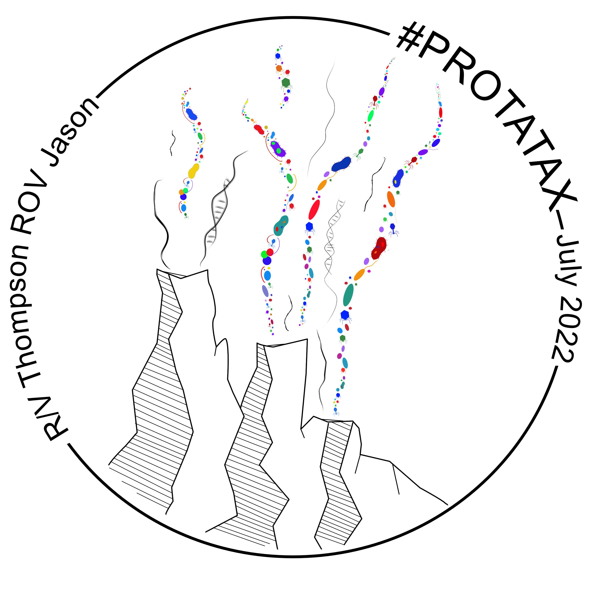

R packages & projects
Axial Seamount Wordle
Play our custom Axial Seamount-themed wordle
Part of our #protatax expedition.
Woods Hole color palette
Download color palettes inspired by Cape Cod and Woods Hole area. Includes docks, sunsets, WHOI logo, and RV Atlantis. github

ExeRcise
Generate a randomized custom workout. Inspired by High Intensity Interval training workouts, user defines warm up and workout interval length and total number of exercises. Additional functions to run workout with a timer in R and a tabata-style workout. github
Lab work
Built for personal use only. List of functions to streamline molecular bench work and common math required in preparing genetic material for sequencing. e.g., PCR master mix calculation, CV=CV, and RNA quantification preparation steps. github repo

the Knob in Woods Hole, MA